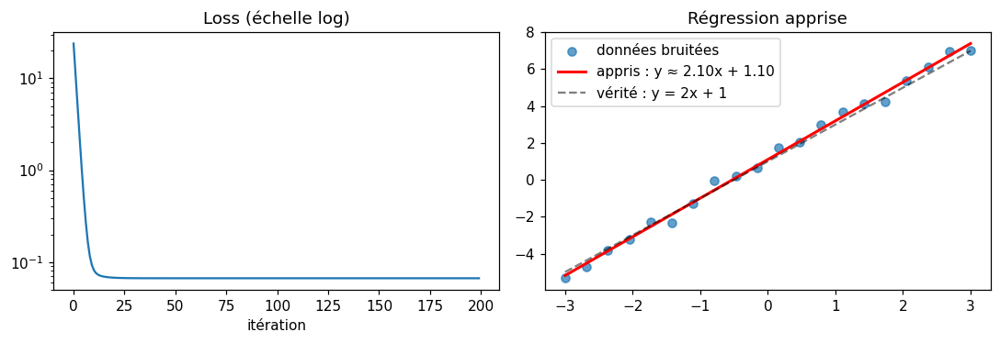
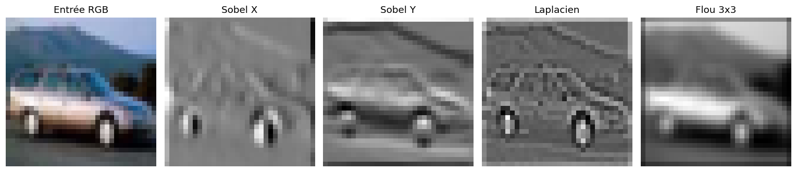
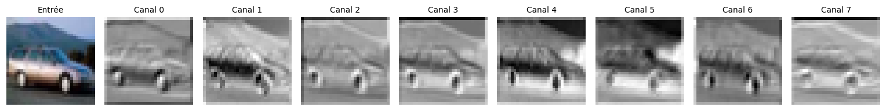
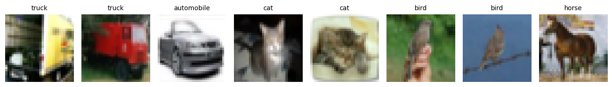
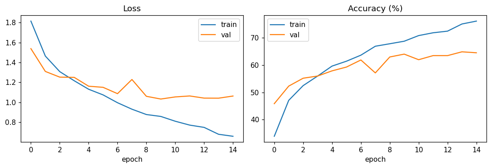
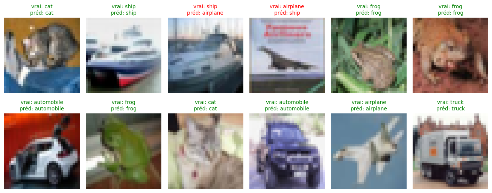
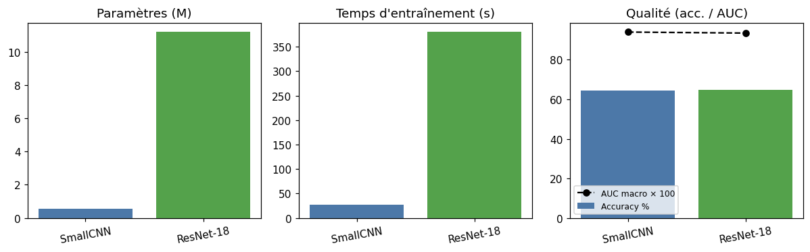

PyTorch : 2.4.1+cu121
Device : cuda
GPU : Quadro P1000PyTorch pour les réseaux de neurones
De la convolution brute à un petit CNN entraîné sur CIFAR-10
Intro
Ce notebook est une introduction autonome à PyTorch : on n’utilise aucune classe spécifique à GMIC. À la fin tu sauras :
- manipuler des tenseurs et l’auto-différentiation,
- écrire un
nn.Moduleet faire passer des données dedans, - comprendre ce que fait une
Conv2d(filtre, stride, padding), - entraîner un petit CNN sur CIFAR-10 avec une boucle forward / backward,
- comparer un petit CNN maison avec un ResNet-18 standard, entraîné à la bonne résolution.
C’est le préquel naturel de la trilogie GMIC (basicblock_gmic.qmd, globalnetwork_gmic.qmd, pipeline_showcase_gmic.qmd).
Partie I — Un tenseur, c’est un tableau avec des super-pouvoirs
Un tenseur PyTorch ressemble à un np.array, mais il sait :
- tourner sur GPU (
.to("cuda")) ; - enregistrer ses opérations pour calculer automatiquement les dérivées via
.backward()— c’est l’autograd, le cœur de l’entraînement.
a = torch.tensor([[1., 2.], [3., 4.]])
b = torch.tensor([[0., 1.], [1., 0.]])
print("a + b =\n", a + b)
print("a @ b =\n", a @ b) # produit matriciel
print("a.shape =", a.shape, " | dtype =", a.dtype)a + b =
tensor([[1., 3.],
[4., 4.]])
a @ b =
tensor([[2., 1.],
[4., 3.]])
a.shape = torch.Size([2, 2]) | dtype = torch.float32Autograd en une image
On définit y = x² + 3x + 2, on demande à PyTorch de tracer les gradients, et on appelle .backward(). La dérivée analytique est dy/dx = 2x + 3. En x = 4 on attend donc 11.
Ce que PyTorch fabrique pendant le forward
Quand tu écris y = x**2 + 3*x + 2, PyTorch ne se contente pas de calculer un nombre : pour chaque opération, il enregistre aussi qui étaient les entrées et comment remonter la dérivée. Résultat : un graphe de calcul orienté, où x est la racine (une feuille : tu l’as créé à la main) et y est la sortie (un nœud intermédiaire : PyTorch l’a fabriqué).
Le diagramme ci-dessous montre les deux passes qui vont se succéder — la passe avant (flèches pleines) qui évalue y, et la passe arrière (flèches pointillées) qui remonte les dérivées à coups de chain rule.
graph LR
%% Définition des styles (couleurs)
classDef input fill:#e1f5fe,stroke:#03a9f4,stroke-width:2px;
classDef operation fill:#fff3e0,stroke:#ff9800,stroke-width:2px;
classDef output fill:#e8f5e9,stroke:#4caf50,stroke-width:2px;
classDef note fill:#f9f9f9,stroke:#999,stroke-width:1px,stroke-dasharray: 5 5;
%% Nœuds (Variables et Opérations)
X(("x = 4.0<br/>(requires_grad=True)")):::input
V1["v1 = x²<br/>(Valeur : 16)"]:::operation
V2["v2 = 3 * x<br/>(Valeur : 12)"]:::operation
V3["v3 = v1 + v2<br/>(Valeur : 28)"]:::operation
Y(("y = v3 + 2<br/>(Valeur : 30)")):::output
%% FORWARD PASS (Passe avant - Flèches pleines)
X -->|x| V1
X -->|x| V2
V1 -->|v1| V3
V2 -->|v2| V3
V3 -->|v3| Y
%% BACKWARD PASS (Passe arrière / Gradients - Flèches pointillées)
Y -.->|"dy/dv3 = 1"| V3
V3 -.->|"dv3/dv1 = 1"| V1
V3 -.->|"dv3/dv2 = 1"| V2
%% Retour aux sources (Calcul de la dérivée par rapport à x)
V1 -.->|"dv1/dx = 2x = 8"| X
V2 -.->|"dv2/dx = 3"| X
%% Note finale pour expliquer le résultat
NoteFinal["Gradient final (x.grad) :<br/> 8 + 3 = 11"]:::note
X --- NoteFinal
Pourquoi x.grad et pas y.grad ? PyTorch ne stocke par défaut le gradient que sur les feuilles (tenseurs créés par toi avec requires_grad=True). y est un intermédiaire : son .grad reste None. Si tu veux forcer la conservation, tu peux appeler y.retain_grad() avant le backward — mais en pratique on n’a besoin que des gradients des paramètres (les poids du réseau), qui sont justement des feuilles.
Pourquoi un .backward() sur un scalaire ? PyTorch ne sait dériver que des scalaires par rapport à des tenseurs. Si y était un vecteur, il faudrait dire par rapport à quelle combinaison linéaire tu dérives (argument grad_tensors=...). C’est pour ça que, dans un entraînement, on fait toujours loss.backward() sur une loss réduite à un seul nombre.
Cycle de vie du graphe de calcul
Le graphe intermédiaire n’est pas gratuit : pour un gros modèle, il peut peser plusieurs GB dans la RAM du GPU. PyTorch le détruit par défaut après chaque .backward() pour libérer la mémoire. Conséquence : un deuxième .backward() sur le même y plantera, sauf si tu as passé retain_graph=True. Le schéma suivant résume les trois phases.
graph TD
%% Styles minimalistes
classDef leaf fill:#e3f2fd,stroke:#2196f3,stroke-width:2px;
classDef temp fill:#f5f5f5,stroke:#999,stroke-width:2px,stroke-dasharray: 4 4;
classDef output fill:#e8f5e9,stroke:#4caf50,stroke-width:2px;
classDef dead fill:#ffcdd2,stroke:#f44336,stroke-width:2px;
subgraph Etape1 ["1. Passe Avant (y = x² + 3x + 2)"]
direction LR
X1("x"):::leaf -->|Alloue| T1("Variables Temporaires C++<br/>(invisibles en Python)"):::temp
T1 -->|Alloue| Y1("y"):::output
end
subgraph Etape2 ["2. Passe Arrière (y.backward)"]
direction RL
Y2("y"):::output -.->|Calcule le gradient| T2("Variables Temporaires C++<br/>(DÉTRUITES APRÈS LECTURE)"):::dead
T2 -.->|Calcule le gradient| X2("x.grad"):::leaf
end
subgraph Etape3 ["3. Après Exécution"]
direction LR
X3("x (et son gradient)"):::leaf
Vide("Le graphe C++ a été purgé de la RAM"):::temp
Y3("y"):::output
X3 ~~~ Vide ~~~ Y3
end
Etape1 ==> Etape2 ==> Etape3
Au terme de ce cycle : la feuille x a un .grad rempli, les temporaires sont libérés, et y n’a toujours pas de gradient associé.
x = torch.tensor(4.0, requires_grad=True)
y = x ** 2 + 3 * x + 2
print("Avant backward :", x.grad) # None — le graphe existe mais pas encore de gradient
y.backward()
print(f"y = {y.item()}") # 30.0 (la valeur forward)
print(f"y.grad : {y.grad}") # None — y n'est pas une feuille
print(f"x.grad : {x.grad.item()}") # 11.0 — PyTorch a rempli le gradient de la feuille
print(f"2x + 3 (analytique) : {2*4 + 3}")Avant backward : None
y = 30.0
y.grad : None
x.grad : 11.0
2x + 3 (analytique) : 11Les gradients s’accumulent
C’est le piège classique de débutant : .grad ne s’écrase pas, il s’additionne à chaque .backward(). Si tu appelles deux fois backward sans remettre à zéro, tu as la somme des deux dérivées dans x.grad. D’où l’obligation d’appeler optimizer.zero_grad() (ou x.grad.zero_()) au début de chaque itération d’entraînement.
x = torch.tensor(4.0, requires_grad=True)
y1 = x ** 2 + 3 * x + 2 # dy1/dx = 2x + 3 = 11
y1.backward()
print(f"après y1.backward : x.grad = {x.grad.item()}") # 11
y2 = x ** 2 # dy2/dx = 2x = 8
y2.backward()
print(f"après y2.backward : x.grad = {x.grad.item()}") # 19 = 11 + 8 (accumulation)
x.grad.zero_() # on remet le compteur à zéro
y3 = 5 * x
y3.backward()
print(f"après zero_() + y3 : x.grad = {x.grad.item()}") # 5après y1.backward : x.grad = 11.0
après y2.backward : x.grad = 19.0
après zero_() + y3 : x.grad = 5.0C’est exactement ce mécanisme qui permet à l’entraînement d’un réseau de neurones de fonctionner : on calcule la loss, on fait loss.backward(), et PyTorch dépose dans chaque paramètre son gradient — prêt à être utilisé par l’optimiseur, qui appellera ensuite optimizer.zero_grad() pour préparer l’itération suivante.
Partie II — Mon premier nn.Module
Un module PyTorch, c’est :
- une classe qui hérite de
nn.Module; - un
__init__qui déclare les couches avec des poids apprenables ; - une méthode
forward(x)qui décrit le calcul.
Construisons le plus petit réseau possible : une régression linéaire y = w·x + b.
class MiniLinear(nn.Module):
def __init__(self):
super().__init__()
self.linear = nn.Linear(in_features=1, out_features=1)
def forward(self, x):
return self.linear(x)
net = MiniLinear()
print(net)
print("Paramètres :", list(net.parameters()))MiniLinear(
(linear): Linear(in_features=1, out_features=1, bias=True)
)
Paramètres : [Parameter containing:
tensor([[-0.0075]], requires_grad=True), Parameter containing:
tensor([0.5364], requires_grad=True)]nn.Linear(1, 1) a créé deux tenseurs apprenables : un poids w et un biais b, initialisés aléatoirement. Dès qu’on appellera net.parameters() dans un optimiseur, ces deux valeurs seront ajustées par la descente de gradient.
Entraîner MiniLinear à apprendre y = 2x + 1
Pour passer de “un module qui existe” à “un module qui a appris quelque chose”, il faut l’assembler avec les trois autres briques qu’on vient de voir : des données, une loss (= à quel point on se trompe), et un optimiseur (= qui met à jour les poids à partir du gradient).
On fabrique 20 points bruités sur la vraie droite y = 2x + 1, et on demande au réseau de retrouver les coefficients.
# 1. Données synthétiques : y_true = 2x + 1 + bruit gaussien
torch.manual_seed(0)
X = torch.linspace(-3, 3, 20).unsqueeze(1) # shape (20, 1)
y_true = 2 * X + 1 + 0.3 * torch.randn_like(X) # bruit d'écart-type 0.3
# 2. Le réseau, la loss et l'optimiseur
net = MiniLinear()
loss_fn = nn.MSELoss() # erreur quadratique moyenne
optimizer = torch.optim.SGD(net.parameters(), lr=0.05)
# 3. La boucle d'entraînement — les 5 lignes canoniques de PyTorch
losses = []
for step in range(200):
y_pred = net(X) # (1) forward : prédiction
loss = loss_fn(y_pred, y_true) # (2) comparer à la vérité
optimizer.zero_grad() # (3) reset gradients (sinon accumulation)
loss.backward() # (4) rétro-propagation
optimizer.step() # (5) mise à jour w et b
losses.append(loss.item())
if step % 40 == 0:
print(f"step {step:3d} loss = {loss.item():.4f}")
# 4. Ce qu'il a appris
w = net.linear.weight.item()
b = net.linear.bias.item()
print(f"\nAppris : y ≈ {w:.3f} * x + {b:.3f}")
print(f"Vérité : y = 2.000 * x + 1.000")step 0 loss = 23.9486
step 40 loss = 0.0667
step 80 loss = 0.0667
step 120 loss = 0.0667
step 160 loss = 0.0667
Appris : y ≈ 2.097 * x + 1.104
Vérité : y = 2.000 * x + 1.000Visualisation : la courbe de loss descend (preuve que l’apprentissage fonctionne), et la droite apprise colle aux données.
fig, ax = plt.subplots(1, 2, figsize=(10, 3.5))
ax[0].plot(losses); ax[0].set_yscale("log")
ax[0].set_title("Loss (échelle log)"); ax[0].set_xlabel("itération")
ax[1].scatter(X.numpy(), y_true.numpy(), label="données bruitées", alpha=0.7)
x_line = torch.linspace(-3, 3, 100).unsqueeze(1)
with torch.no_grad():
y_line = net(x_line)
ax[1].plot(x_line.numpy(), y_line.numpy(), "r-", lw=2, label=f"appris : y ≈ {w:.2f}x + {b:.2f}")
ax[1].plot(x_line.numpy(), (2 * x_line + 1).numpy(), "k--", alpha=0.5, label="vérité : y = 2x + 1")
ax[1].legend(); ax[1].set_title("Régression apprise")
plt.tight_layout(); plt.show()
Ce micro-entraînement est la même boucle qu’on utilisera pour CIFAR-10 en Partie VI, qu’on utilise pour ResNet-18 en Partie VIII, et qu’on utilise dans fine_tuning/train_resnet.py sur les mammographies RSNA. Seuls changent : l’architecture du nn.Module, la loss, et la source de données. Le squelette forward → loss → zero_grad → backward → step est invariant.
Partie III — nn.Conv2d, la brique des CNN
Pour classer une image, on ne peut pas traiter chaque pixel comme une feature indépendante : il y en a trop, et surtout l’information est locale (un œil, une roue, une tumeur). La convolution résout ce problème.
Une Conv2d(in_channels=3, out_channels=8, kernel_size=3) fait glisser 8 filtres de taille 3×3 sur l’image d’entrée (3 canaux RGB) et produit 8 cartes d’activation qui encodent « où chaque filtre s’allume ».
Quatre filtres classiques sur une vraie image
Plutôt que de bricoler une image synthétique, on prend directement une image CIFAR-10 (on reviendra sur le dataset en Partie IV) et on lui applique quatre filtres codés à la main connus depuis les années 70 en traitement d’image :
- Sobel X — dérivée horizontale, allume les bords verticaux
- Sobel Y — dérivée verticale, allume les bords horizontaux
- Laplacien — somme des dérivées secondes, allume tous les contours
- Moyenneur 3×3 — lisse l’image (flou)
Le code ci-dessous utilise trois idiomes PyTorch qu’il vaut mieux décoder avant de le lire :
conv.weight.copy_(k.view(1, 1, 3, 3))— les méthodes qui finissent par un underscore (copy_,zero_,add_, …) sont in-place : elles modifient le tenseur au lieu d’en créer un nouveau. Ici, on écrase les poids aléatoires initiaux duConv2dpar notre filtre codé à la main..view(1, 1, 3, 3)— reshape sans copie, ça change seulement l’interprétation des 9 valeurs : le filtre 3×3 doit avoir la shape(out_channels, in_channels, H, W)attendue parConv2d, soit(1, 1, 3, 3).with torch.no_grad():— demande à PyTorch de ne pas tracer ce qui se passe dans le bloc. Obligatoire quand on modifie des poids en in-place : sinon autograd te jette une erreur “a leaf Variable that requires grad is being used in an in-place operation”.bias=Falsedans leConv2d— on ne veut pas qu’un biais appris décale le résultat de nos filtres théoriques (Sobel, Laplacien…)..detach()— casse le lien avec le graphe de calcul, pour extraire les valeurs sans risque d’effet de bord sur un futur.backward().
CIFAR_ROOT = os.path.expanduser("~/.cache/cifar10")
_demo_ds = datasets.CIFAR10(root=CIFAR_ROOT, train=True,
transform=transforms.ToTensor(), download=True)
# On cherche une image de voiture (classe 1) pour avoir des bords nets
for _img, _lbl in _demo_ds:
if _lbl == 1:
img_rgb = _img # (3, 32, 32) en [0, 1]
break
img_gray = img_rgb.mean(0, keepdim=True).unsqueeze(0) # (1, 1, 32, 32)
filters = {
"Sobel X": torch.tensor([[-1, 0, 1], [-2, 0, 2], [-1, 0, 1]], dtype=torch.float32),
"Sobel Y": torch.tensor([[-1, -2, -1], [0, 0, 0], [1, 2, 1]], dtype=torch.float32),
"Laplacien": torch.tensor([[0, -1, 0], [-1, 4, -1], [0, -1, 0]], dtype=torch.float32),
"Flou 3x3": torch.ones(3, 3) / 9.0,
}
fig, axes = plt.subplots(1, 5, figsize=(14, 3))
axes[0].imshow(img_rgb.permute(1, 2, 0)); axes[0].set_title("Entrée RGB")
axes[0].axis("off")
for ax, (name, k) in zip(axes[1:], filters.items()):
conv = nn.Conv2d(1, 1, kernel_size=3, padding=1, bias=False)
with torch.no_grad():
conv.weight.copy_(k.view(1, 1, 3, 3))
feat = conv(img_gray)[0, 0].detach()
ax.imshow(feat, cmap="gray"); ax.set_title(name); ax.axis("off")
plt.tight_layout(); plt.show()Files already downloaded and verified
Chaque filtre « illumine » une caractéristique différente de la même image. La clé pédagogique : dans un vrai CNN, ces coefficients 3×3 ne sont pas codés à la main — ils sont appris par descente de gradient pour optimiser la tâche finale.
Un Conv2d produit plusieurs cartes en parallèle
Quand on écrit nn.Conv2d(3, 8, kernel_size=3), PyTorch crée 8 filtres indépendants appliqués à la même image et produit 8 cartes d’activation. Avant entraînement, ces filtres sont initialisés aléatoirement : chaque carte ressemble à du bruit vaguement structuré.
torch.manual_seed(0)
conv = nn.Conv2d(3, 8, kernel_size=3, padding=1, bias=False)
with torch.no_grad():
feat = conv(img_rgb.unsqueeze(0)) # (1, 8, 32, 32)
fig, axes = plt.subplots(1, 9, figsize=(14, 2))
axes[0].imshow(img_rgb.permute(1, 2, 0)); axes[0].set_title("Entrée", fontsize=9)
axes[0].axis("off")
for i in range(8):
axes[i + 1].imshow(feat[0, i].detach(), cmap="gray")
axes[i + 1].set_title(f"Canal {i}", fontsize=9); axes[i + 1].axis("off")
plt.tight_layout(); plt.show()
Après entraînement, chacun de ces 8 canaux aurait convergé vers un motif utile (bord à 30°, texture granuleuse, tache rouge…). C’est ce que Zeiler & Fergus (2014) ont visualisé pour AlexNet et qui a convaincu la communauté que les CNN apprenaient une hiérarchie de features — bords → textures → parties → objets.
Effet des hyperparamètres
| Paramètre | Rôle | Effet sur la shape |
|---|---|---|
kernel_size |
taille du filtre | plus grand = champ réceptif plus large |
stride |
pas de déplacement | stride 2 divise H et W par ~2 |
padding |
zéros ajoutés aux bords | préserve la shape d’entrée |
out_channels |
nombre de filtres | dimension du canal en sortie |
x = torch.randn(1, 3, 32, 32) # batch 1, 3 canaux, 32x32
for (k, s, p) in [(3, 1, 1), (3, 2, 1), (5, 1, 0), (7, 2, 3)]:
c = nn.Conv2d(3, 8, kernel_size=k, stride=s, padding=p)
out = c(x)
print(f"kernel={k} stride={s} padding={p} → in {tuple(x.shape)} out {tuple(out.shape)}")kernel=3 stride=1 padding=1 → in (1, 3, 32, 32) out (1, 8, 32, 32)
kernel=3 stride=2 padding=1 → in (1, 3, 32, 32) out (1, 8, 16, 16)
kernel=5 stride=1 padding=0 → in (1, 3, 32, 32) out (1, 8, 28, 28)
kernel=7 stride=2 padding=3 → in (1, 3, 32, 32) out (1, 8, 16, 16)Partie IV — CIFAR-10 et le pipeline de données
CIFAR-10 = 60 000 images 32×32 en couleur, 10 classes (avion, voiture, chat…). torchvision la télécharge automatiquement. Mais avant de la donner au réseau, on passe par trois briques que PyTorch impose pour tout projet d’entraînement : transforms, Dataset, DataLoader. Chacune fait une seule chose — bien comprendre leur rôle respectif t’évite des heures de débug plus tard.
Les trois briques du pipeline
| Brique | Rôle | Ce qu’on lui donne | Ce qu’elle produit |
|---|---|---|---|
transforms |
transformer une image | un PIL.Image ou un tenseur |
un tenseur prêt pour le réseau |
Dataset |
exposer les échantillons un par un | un index i |
(x_i, y_i) |
DataLoader |
batcher + paralléliser | un Dataset |
une séquence de batches (xs, ys) |
transforms — le pipeline par image
transforms.Compose([...]) est une file d’opérations appliquée séquentiellement à chaque image, au moment où on la lit. Les deux qu’on utilise :
transforms.ToTensor()convertit unPIL.Image(uint8, valeurs 0–255) en tenseurtorch.float32normalisé dans [0, 1], avec la convention (channels, height, width) de PyTorch — différente de (H, W, C) qu’attendmatplotlib.transforms.Normalize(mean, std)applique(x - mean) / stdcanal par canal. Icimean = std = (0.5, 0.5, 0.5)donc on mappe [0, 1] → [-1, 1]. Pourquoi ? Un réseau converge beaucoup plus vite quand ses entrées sont centrées autour de 0 et d’échelle ~1 : les gradients ne sont pas biaisés vers une direction, les activations ne saturent pas, l’optimiseur avance droit. Pour les modèles pré-entraînés ImageNet (comme ResNet-18 en Partie VIII), on est forcé d’utiliser les stats spécifiquesmean=[0.485, 0.456, 0.406], std=[0.229, 0.224, 0.225]— sinon les poids appris sur ImageNet ne savent plus quoi faire des entrées.
Tu peux empiler plus d’étapes (augmentation aléatoire : RandomHorizontalFlip, RandomCrop, ColorJitter…). On en verra en Partie VIII.
Dataset — l’interface minimale
Un Dataset PyTorch, c’est une classe qui répond à deux questions : “combien d’échantillons ?” (__len__) et “donne-moi l’échantillon numéro i” (__getitem__). C’est tout.
class MyDataset(Dataset):
def __init__(self, xs, ys):
self.xs, self.ys = xs, ys # deux listes de même longueur
def __len__(self):
return len(self.xs)
def __getitem__(self, i):
return self.xs[i], self.ys[i] # PyTorch ne demande rien de plus
# Exemple minuscule — en pratique __getitem__ fait souvent de l'I/O (open + decode)
tiny = MyDataset([torch.randn(3) for _ in range(4)], [0, 1, 1, 0])
print("len :", len(tiny))
print("item 2 :", tiny[2])len : 4
item 2 : (tensor([-0.0282, -0.0524, -1.0896]), 1)datasets.CIFAR10 est exactement ça en plus grand : son __getitem__(i) lit la i-ème image du binaire CIFAR, lui applique transform, et renvoie (tenseur_image, label_int).
DataLoader — le gestionnaire de batches
Un Dataset te donne les échantillons un par un. Mais un GPU traite plus vite 128 images d’un coup que 128 fois 1 image. Et chaque appel à __getitem__ coûte du temps (ouverture disque + decode + transforms). Le DataLoader résout les deux problèmes en même temps :
- Shuffle — mélange les indices au début de chaque epoch (
shuffle=True) pour éviter que le réseau mémorise l’ordre des données. - Batching — regroupe
batch_sizeéchantillons en un tenseur empilé de shape(batch_size, ...). C’est le collate : par défaut il empile avectorch.stack, tu peux fournir une fonction custom si besoin. - Parallélisation — avec
num_workers=N, il lance N sous-processus qui pré-calculent les prochains batches pendant que le GPU bosse sur celui en cours. Gain majeur quand le__getitem__est lourd (décodage JPEG, resize, augmentation) — c’est exactement ce qu’on a mis en place dansfine_tuning/train_resnet.pyavecNUM_WORKERS=8. pin_memory=True— les batches sont alloués dans une zone RAM “pinned”, transférable au GPU en une seule DMA au lieu de copies intermédiaires. Gratuit, toujours activer sur CUDA.
Une fois tout ça câblé, on écrit juste for x, y in loader: ....
CIFAR_ROOT = os.path.expanduser("~/.cache/cifar10")
transform = transforms.Compose([
transforms.ToTensor(), # [0, 255] -> [0, 1], (3, 32, 32)
transforms.Normalize((0.5, 0.5, 0.5),
(0.5, 0.5, 0.5)), # (x - 0.5) / 0.5 → [-1, 1]
])
train_full = datasets.CIFAR10(root=CIFAR_ROOT, train=True, transform=transform, download=True)
test_full = datasets.CIFAR10(root=CIFAR_ROOT, train=False, transform=transform, download=True)
# Sous-échantillons pour garder le notebook rapide
train_ds = Subset(train_full, range(10_000))
test_ds = Subset(test_full, range(2_000))
train_loader = DataLoader(train_ds, batch_size=128, shuffle=True, num_workers=4,
pin_memory=True, persistent_workers=True)
test_loader = DataLoader(test_ds, batch_size=256, shuffle=False, num_workers=4,
pin_memory=True, persistent_workers=True)
classes = train_full.classes
print("Classes :", classes)
print(f"Train subset : {len(train_ds)} images | Test subset : {len(test_ds)} images")
# Aperçu
imgs, labels = next(iter(train_loader))
print(f"Shape d'un batch : {imgs.shape} (N, C, H, W)")
fig, axes = plt.subplots(1, 8, figsize=(12, 2))
for i, ax in enumerate(axes):
img = imgs[i].permute(1, 2, 0).numpy() * 0.5 + 0.5 # dé-normalisation pour affichage
ax.imshow(img); ax.set_title(classes[labels[i]], fontsize=9); ax.axis("off")
plt.tight_layout(); plt.show()Files already downloaded and verified
Files already downloaded and verified
Classes : ['airplane', 'automobile', 'bird', 'cat', 'deer', 'dog', 'frog', 'horse', 'ship', 'truck']
Train subset : 10000 images | Test subset : 2000 images
Shape d'un batch : torch.Size([128, 3, 32, 32]) (N, C, H, W)
Note la dé-normalisation * 0.5 + 0.5 pour l’affichage : matplotlib veut des pixels dans [0, 1], alors que Normalize nous a mis dans [-1, 1]. C’est typique — le pipeline d’affichage est l’inverse du pipeline d’entraînement.
Partie V — Architecture d’un petit CNN
On construit un CNN simple à deux étages convolutifs, suivis d’une tête fully-connected. On suit le schéma canonique :
Conv → BatchNorm → ReLU → MaxPool × N fois
puis Flatten → Linear → ReLU → Linear(10)class SmallCNN(nn.Module):
def __init__(self, num_classes: int = 10):
super().__init__()
# Bloc 1 : 3→32 canaux, on garde 32x32 puis pool → 16x16
self.conv1 = nn.Conv2d(3, 32, kernel_size=3, padding=1)
self.bn1 = nn.BatchNorm2d(32)
# Bloc 2 : 32→64 canaux, pool → 8x8
self.conv2 = nn.Conv2d(32, 64, kernel_size=3, padding=1)
self.bn2 = nn.BatchNorm2d(64)
self.pool = nn.MaxPool2d(2, 2)
# Tête
self.fc1 = nn.Linear(64 * 8 * 8, 128)
self.fc2 = nn.Linear(128, num_classes)
self.dropout = nn.Dropout(0.3)
def forward(self, x):
x = self.pool(F.relu(self.bn1(self.conv1(x)))) # (N, 32, 16, 16)
x = self.pool(F.relu(self.bn2(self.conv2(x)))) # (N, 64, 8, 8)
x = x.view(x.size(0), -1) # flatten (N, 4096)
x = self.dropout(F.relu(self.fc1(x))) # (N, 128)
return self.fc2(x) # (N, 10)
model = SmallCNN().to(DEVICE)
print(model)
n_params = sum(p.numel() for p in model.parameters())
print(f"\nParamètres totaux : {n_params:,} ({n_params/1e6:.2f} M)")SmallCNN(
(conv1): Conv2d(3, 32, kernel_size=(3, 3), stride=(1, 1), padding=(1, 1))
(bn1): BatchNorm2d(32, eps=1e-05, momentum=0.1, affine=True, track_running_stats=True)
(conv2): Conv2d(32, 64, kernel_size=(3, 3), stride=(1, 1), padding=(1, 1))
(bn2): BatchNorm2d(64, eps=1e-05, momentum=0.1, affine=True, track_running_stats=True)
(pool): MaxPool2d(kernel_size=2, stride=2, padding=0, dilation=1, ceil_mode=False)
(fc1): Linear(in_features=4096, out_features=128, bias=True)
(fc2): Linear(in_features=128, out_features=10, bias=True)
(dropout): Dropout(p=0.3, inplace=False)
)
Paramètres totaux : 545,290 (0.55 M)Partie VI — La boucle d’entraînement
Les quatre lignes magiques qui reviennent dans absolument tout entraînement PyTorch :
pred = model(x) # (1) forward
loss = criterion(pred, y) # (2) comparer à la vérité
loss.backward() # (3) calculer les gradients
optimizer.step() # (4) mettre à jour les poids
optimizer.zero_grad() # (5) remettre à zéro pour le prochain batchEt c’est tout. On l’emballe dans deux boucles imbriquées : une sur les époques (passes complètes sur le dataset), une sur les batches.
À propos de criterion : ce n’est pas un mot-clé PyTorch, juste une convention de nommage pour “la fonction qu’on utilise pour mesurer l’erreur” (= la loss). On aurait pu l’appeler loss_fn, certains codes le font. nn.CrossEntropyLoss() est un nn.Module (comme notre MiniLinear de la Partie II) : on l’instancie une fois, puis on l’appelle comme une fonction à chaque batch avec criterion(pred, y).
Détail important : CrossEntropyLoss attend les logits (les sorties brutes du réseau, avant softmax) et pas les probabilités. Elle applique LogSoftmax + NLLLoss en interne, de manière numériquement stable. C’est pour ça que dans le forward de SmallCNN on renvoie self.fc2(x) sans activation finale. Autres cas fréquents :
- Classification binaire →
nn.BCEWithLogitsLoss()(logits + sigmoid interne) - Régression →
nn.MSELoss()(comme en Partie II pourMiniLinear)
def train_one_epoch(model, loader, optimizer, criterion, device):
model.train()
total, correct, running_loss = 0, 0, 0.0
for x, y in loader:
x, y = x.to(device), y.to(device)
optimizer.zero_grad()
pred = model(x)
loss = criterion(pred, y)
loss.backward()
optimizer.step()
running_loss += loss.item() * x.size(0)
correct += (pred.argmax(1) == y).sum().item()
total += x.size(0)
return running_loss / total, correct / total
@torch.no_grad()
def evaluate(model, loader, criterion, device):
model.eval()
total, correct, running_loss = 0, 0, 0.0
for x, y in loader:
x, y = x.to(device), y.to(device)
pred = model(x)
running_loss += criterion(pred, y).item() * x.size(0)
correct += (pred.argmax(1) == y).sum().item()
total += x.size(0)
return running_loss / total, correct / total
criterion = nn.CrossEntropyLoss()
optimizer = torch.optim.Adam(model.parameters(), lr=1e-3)
history = {"train_loss": [], "train_acc": [], "val_loss": [], "val_acc": []}
EPOCHS = 15
t0 = time.time()
for epoch in range(1, EPOCHS + 1):
tr_loss, tr_acc = train_one_epoch(model, train_loader, optimizer, criterion, DEVICE)
vl_loss, vl_acc = evaluate(model, test_loader, criterion, DEVICE)
history["train_loss"].append(tr_loss); history["train_acc"].append(tr_acc)
history["val_loss"].append(vl_loss); history["val_acc"].append(vl_acc)
print(f"Epoch {epoch}/{EPOCHS} "
f"train loss={tr_loss:.3f} acc={tr_acc*100:.1f}% "
f"val loss={vl_loss:.3f} acc={vl_acc*100:.1f}%")
smallcnn_time = time.time() - t0
print(f"\nTemps total : {smallcnn_time:.1f} s")Epoch 1/15 train loss=1.814 acc=33.9% val loss=1.538 acc=45.9%
Epoch 2/15 train loss=1.464 acc=47.1% val loss=1.310 acc=52.3%
Epoch 3/15 train loss=1.308 acc=52.5% val loss=1.253 acc=55.2%
Epoch 4/15 train loss=1.217 acc=56.0% val loss=1.251 acc=56.0%
Epoch 5/15 train loss=1.132 acc=59.7% val loss=1.162 acc=57.9%
Epoch 6/15 train loss=1.075 acc=61.5% val loss=1.151 acc=59.3%
Epoch 7/15 train loss=0.997 acc=63.7% val loss=1.087 acc=61.9%
Epoch 8/15 train loss=0.932 acc=67.0% val loss=1.229 acc=57.1%
Epoch 9/15 train loss=0.878 acc=67.9% val loss=1.061 acc=63.0%
Epoch 10/15 train loss=0.859 acc=68.8% val loss=1.034 acc=64.0%
Epoch 11/15 train loss=0.811 acc=70.9% val loss=1.055 acc=62.0%
Epoch 12/15 train loss=0.773 acc=71.9% val loss=1.064 acc=63.5%
Epoch 13/15 train loss=0.750 acc=72.5% val loss=1.043 acc=63.5%
Epoch 14/15 train loss=0.681 acc=75.1% val loss=1.042 acc=64.9%
Epoch 15/15 train loss=0.661 acc=76.2% val loss=1.064 acc=64.5%
Temps total : 26.6 sCourbes d’apprentissage
fig, ax = plt.subplots(1, 2, figsize=(10, 3.5))
ax[0].plot(history["train_loss"], label="train"); ax[0].plot(history["val_loss"], label="val")
ax[0].set_title("Loss"); ax[0].set_xlabel("epoch"); ax[0].legend()
ax[1].plot([a*100 for a in history["train_acc"]], label="train")
ax[1].plot([a*100 for a in history["val_acc"]], label="val")
ax[1].set_title("Accuracy (%)"); ax[1].set_xlabel("epoch"); ax[1].legend()
plt.tight_layout(); plt.show()
Si tout s’est bien passé : loss qui descend, accuracy qui monte. Avec 10 000 images et 5 époques, on tourne autour de 60-65 % sur CIFAR-10 — très loin de l’état de l’art (~99 %), mais c’est déjà 6× mieux que le hasard (10 %) pour un réseau de 500k paramètres qu’on a entraîné en moins d’une minute.
Pourquoi « hasard = 10 % » ? CIFAR-10 contient 10 classes équilibrées (1000 images par classe dans le test set). Un classifieur qui répondrait au hasard tomberait juste 1 fois sur 10, soit 10 %. C’est le baseline aléatoire : tout modèle qui fait ≤ 10 % n’a rien appris. Pour un problème à N classes équilibrées le baseline est 1/N ; pour du binaire, 50 %.
Partie VII — Prédictions visualisées
model.eval()
imgs, labels = next(iter(test_loader))
with torch.no_grad():
preds = model(imgs.to(DEVICE)).argmax(1).cpu()
fig, axes = plt.subplots(2, 6, figsize=(12, 5))
for i, ax in enumerate(axes.flatten()):
img = imgs[i].permute(1, 2, 0).numpy() * 0.5 + 0.5
ok = preds[i].item() == labels[i].item()
color = "green" if ok else "red"
ax.imshow(img); ax.axis("off")
ax.set_title(f"vrai: {classes[labels[i]]}\npréd: {classes[preds[i]]}",
fontsize=9, color=color)
plt.tight_layout(); plt.show()
Partie VIII — ResNet-18 de torchvision, entraîné à sa résolution
torchvision.models livre des dizaines d’architectures prêtes à l’emploi. On instancie un ResNet-18 (He et al. 2015, 18 couches) sans poids pré-entraînés et on lui donne des images à la bonne résolution.
Pourquoi la résolution change tout
ResNet-18 est conçu pour ImageNet (224×224). Avec des entrées 32×32, son premier Conv2d (7×7, stride 2) + MaxPool réduit immédiatement l’image à 8×8, puis les quatre blocs résiduels la compressent jusqu’à 1×1 avant le classificateur — toute l’information spatiale est perdue.
On va upsampler les images CIFAR-10 à 96×96 (interpolation bicubique, 3× la taille d’origine). Ce n’est pas la résolution canonique (224), mais c’est un bon compromis temps/qualité :
| Étage ResNet-18 | images 32×32 | images 96×96 |
|---|---|---|
Après conv1 + maxpool |
8×8 | 24×24 |
Après layer2 (stride 2) |
4×4 | 12×12 |
Après layer3 (stride 2) |
2×2 | 6×6 |
Après layer4 (stride 2) |
1×1 | 3×3 |
À 96×96 le Global Avg Pool final travaille sur 9 positions spatiales au lieu d’une seule — le réseau a vraiment quelque chose à analyser.
rn18_transform = transforms.Compose([
transforms.Resize((96, 96),
interpolation=transforms.InterpolationMode.BICUBIC),
transforms.ToTensor(),
transforms.Normalize((0.5, 0.5, 0.5), (0.5, 0.5, 0.5)),
])
rn18_train_ds = Subset(datasets.CIFAR10(root=CIFAR_ROOT, train=True,
transform=rn18_transform, download=True),
range(10_000))
rn18_test_ds = Subset(datasets.CIFAR10(root=CIFAR_ROOT, train=False,
transform=rn18_transform, download=True),
range(2_000))
rn18_train_loader = DataLoader(rn18_train_ds, batch_size=64, shuffle=True, num_workers=4,
pin_memory=True, persistent_workers=True)
rn18_test_loader = DataLoader(rn18_test_ds, batch_size=128, shuffle=False, num_workers=4,
pin_memory=True, persistent_workers=True)
print(f"Taille des batches : {next(iter(rn18_train_loader))[0].shape}")Files already downloaded and verified
Files already downloaded and verified
Taille des batches : torch.Size([64, 3, 96, 96])Architecture
from torchvision.models import resnet18
resnet18_model = resnet18(weights=None, num_classes=10).to(DEVICE)
n_rn18 = sum(p.numel() for p in resnet18_model.parameters())
print(f"ResNet-18 : {n_rn18:,} paramètres ({n_rn18/1e6:.2f} M)")
print(resnet18_model.conv1)ResNet-18 : 11,181,642 paramètres (11.18 M)
Conv2d(3, 64, kernel_size=(7, 7), stride=(2, 2), padding=(3, 3), bias=False)Entraînement (15 epochs, images 96×96)
rn18_optimizer = torch.optim.Adam(resnet18_model.parameters(), lr=1e-3)
t0 = time.time()
for epoch in range(1, EPOCHS + 1):
tr_loss, tr_acc = train_one_epoch(resnet18_model, rn18_train_loader,
rn18_optimizer, criterion, DEVICE)
vl_loss, vl_acc = evaluate(resnet18_model, rn18_test_loader, criterion, DEVICE)
print(f"Epoch {epoch}/{EPOCHS} train acc={tr_acc*100:.1f}% val acc={vl_acc*100:.1f}%")
resnet18_time = time.time() - t0
print(f"\nTemps total : {resnet18_time:.1f} s")Epoch 1/15 train acc=39.3% val acc=43.3%
Epoch 2/15 train acc=51.2% val acc=50.3%
Epoch 3/15 train acc=59.1% val acc=57.4%
Epoch 4/15 train acc=66.5% val acc=59.7%
Epoch 5/15 train acc=71.3% val acc=58.4%
Epoch 6/15 train acc=78.0% val acc=62.8%
Epoch 7/15 train acc=84.2% val acc=64.5%
Epoch 8/15 train acc=89.5% val acc=63.4%
Epoch 9/15 train acc=91.5% val acc=61.2%
Epoch 10/15 train acc=95.0% val acc=61.1%
Epoch 11/15 train acc=96.2% val acc=65.6%
Epoch 12/15 train acc=95.9% val acc=64.5%
Epoch 13/15 train acc=96.9% val acc=66.1%
Epoch 14/15 train acc=96.9% val acc=64.3%
Epoch 15/15 train acc=97.6% val acc=64.7%
Temps total : 379.8 sPartie IX — Tableau comparatif
On mesure l’accuracy top-1 et l’AUC ROC macro sur le test set. SmallCNN est évalué sur ses images 32×32, ResNet-18 sur ses images 96×96 — chaque modèle est jugé dans les conditions où il a été entraîné.
from sklearn.metrics import roc_auc_score, accuracy_score
@torch.no_grad()
def compute_metrics(net, loader, device):
net.eval()
all_probs, all_labels = [], []
for x, y in loader:
probs = F.softmax(net(x.to(device)), dim=1).cpu().numpy()
all_probs.append(probs); all_labels.append(y.numpy())
probs = np.concatenate(all_probs); labels = np.concatenate(all_labels)
acc = accuracy_score(labels, probs.argmax(1))
auc = roc_auc_score(labels, probs, multi_class="ovr", average="macro")
return acc, auc
rows = []
for name, net, loader, t in [
("SmallCNN", model, test_loader, smallcnn_time),
("ResNet-18", resnet18_model, rn18_test_loader, resnet18_time),
]:
acc, auc = compute_metrics(net, loader, DEVICE)
n = sum(p.numel() for p in net.parameters())
rows.append((name, n, t, acc, auc))
print(f"{'Modèle':<13}{'Paramètres':>14}{'Temps (s)':>12}{'Accuracy':>12}{'AUC macro':>12}")
print("-" * 63)
for name, n, t, acc, auc in rows:
print(f"{name:<13}{n:>14,}{t:>12.1f}{acc*100:>11.1f}%{auc:>12.3f}")Modèle Paramètres Temps (s) Accuracy AUC macro
---------------------------------------------------------------
SmallCNN 545,290 26.6 64.5% 0.940
ResNet-18 11,181,642 379.8 64.7% 0.935fig, ax = plt.subplots(1, 3, figsize=(11, 3.5))
names = [r[0] for r in rows]
colors = ["#4C78A8", "#54A24B"]
ax[0].bar(names, [r[1]/1e6 for r in rows], color=colors)
ax[0].set_title("Paramètres (M)")
ax[1].bar(names, [r[2] for r in rows], color=colors)
ax[1].set_title("Temps d'entraînement (s)")
ax[2].bar(names, [r[3]*100 for r in rows], color=colors, label="Accuracy %")
ax[2].plot(names, [r[4]*100 for r in rows], "ko--", label="AUC macro × 100")
ax[2].set_title("Qualité (acc. / AUC)")
ax[2].legend(fontsize=8)
for a in ax:
a.tick_params(axis="x", rotation=10)
plt.tight_layout(); plt.show()
Interprétation
- Paramètres : ResNet-18 (≈11 M) est ~22× plus gros. Plus de capacité, mais aussi plus de risque d’overfitting avec seulement 10 000 images.
- Temps : ResNet-18 est plus lent — plus de poids, images plus grandes, batches plus petits.
- Qualité : avec 96×96 et 15 epochs, ResNet-18 devrait dépasser SmallCNN. Si l’écart reste faible, c’est le signe qu’il faudrait davantage de données ou une augmentation (random crop, flip horizontal) pour que ses 11 M de paramètres soient réellement utiles.
L’AUC ROC macro (un-contre-tous moyenné) mesure la qualité du ranking des probabilités, indépendamment du seuil de décision. 1.0 = parfait, 0.5 = hasard. Elle est plus informative que l’accuracy quand les classes sont déséquilibrées — cas typique en médical où une tumeur ne représente que quelques pourcents des images.
Pour aller plus loin
- basicblock_gmic.qmd — dissection complète du
BasicBlockV1et duLocalNetworkde GMIC. - globalnetwork_gmic.qmd — le
BasicBlockV2(pré-activé) et le design à 16 filtres du GlobalNetwork. - pipeline_showcase_gmic.qmd — le pipeline GMIC complet sur une mammographie réelle, avec les poids pré-entraînés NYU.
Les primitives à retenir
| Concept | Classe/fonction | Rôle |
|---|---|---|
| Tenseur | torch.tensor, .to(device) |
donnée de base |
| Dérivation | .backward(), .grad |
autograd |
| Couche | nn.Linear, nn.Conv2d, nn.BatchNorm2d |
poids apprenables |
| Module | nn.Module + forward(x) |
composition |
| Non-linéarité | F.relu, torch.sigmoid, torch.tanh |
sans poids |
| Loss | nn.CrossEntropyLoss, nn.MSELoss |
mesure d’écart |
| Optimiseur | torch.optim.Adam, torch.optim.SGD |
descente de gradient |
| Données | Dataset, DataLoader |
pipeline de batches |
| Régularisation | nn.Dropout, nn.BatchNorm2d |
stabilité + généralisation |
| Résidualité | out = F(x) + x |
gradients qui ne s’évanouissent pas |
Avec ces briques, tu peux lire n’importe quel code PyTorch moderne, y compris celui de GMIC.